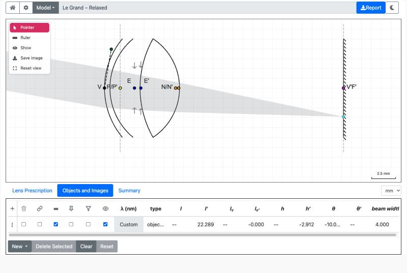
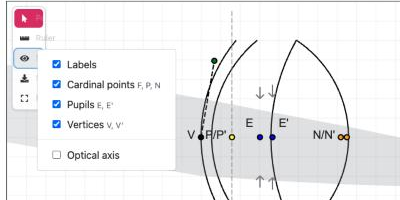
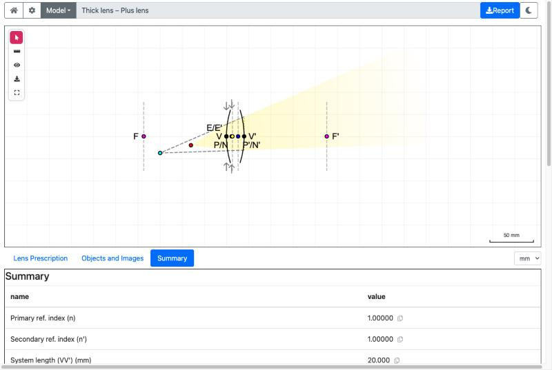
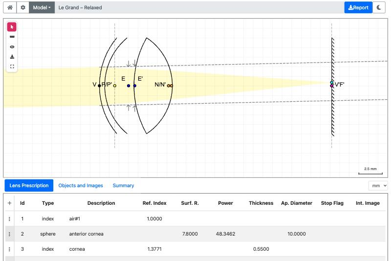
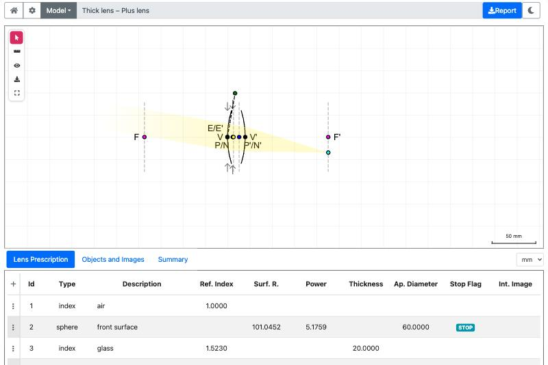
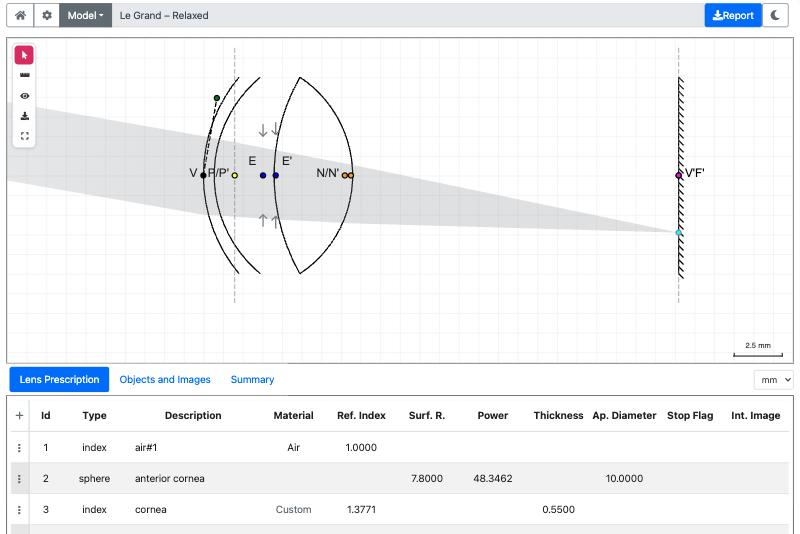
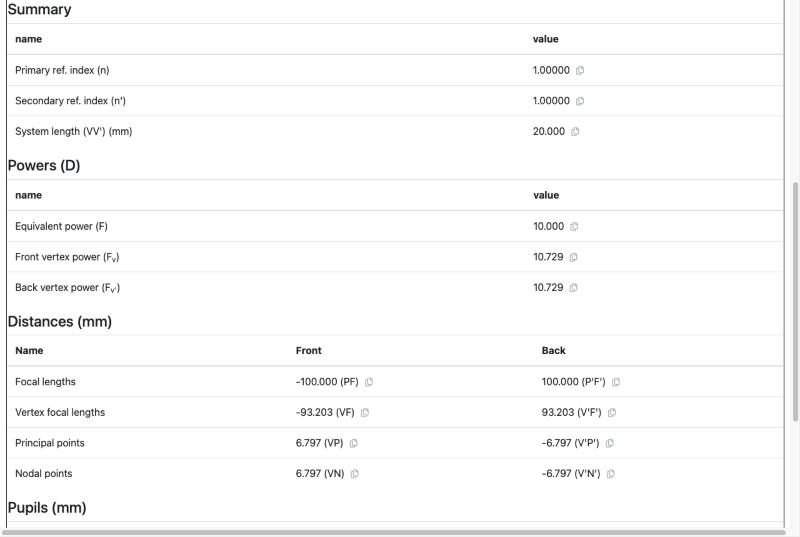
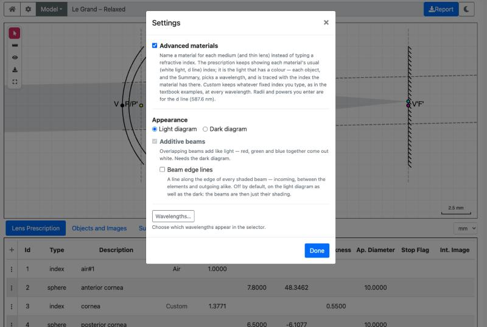
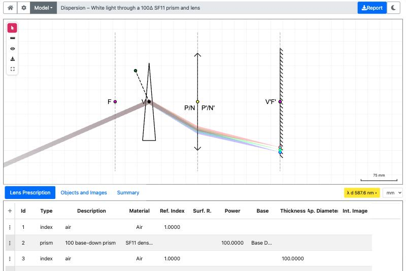
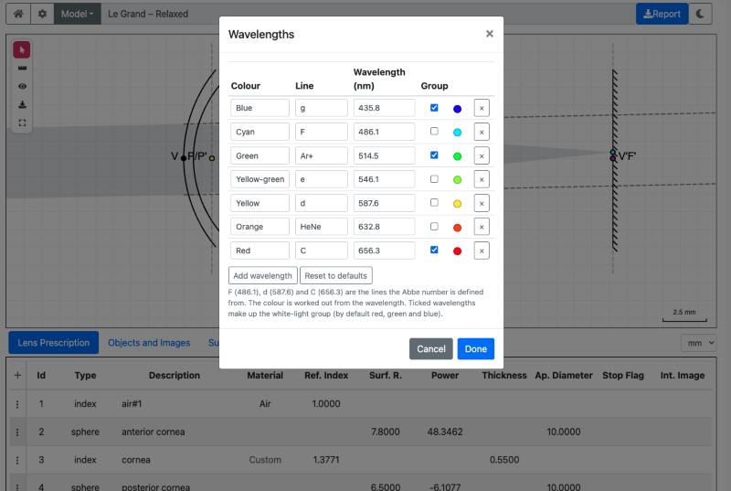

An interactive paraxial ray-tracer for the OPTOM 263 Essential Optics course (School of Optometry and Vision Science, University of Auckland). You build or load an optical system (a lens, a telescope, a schematic eye, an instrument), place objects in front of it, and see where the images form, drag things about, and read the numbers.
It uses paraxial (small-angle) optics and the sign conventions used in optometry. It is a teaching tool: the rays are exact for the paraxial model and say nothing about aberrations.
The front page (index.html) has a card for each
laboratory and instrument:
| Card | What you get |
|---|---|
| Laboratory 1 to 4, 6 | The lab models for OPTOM 263 (thin lenses, thick lens, emmetropic and ametropic eye, telescopes and low vision). |
| The vertometer, the keratometer | The instruments, with their standard and mystery models. |
The workbench (main.html) |
Any model, chosen from a searchable list. |
The eye (eye/) |
The schematic eyes (Le Grand, Gullstrand, Emsley, reduced eyes) to explore. |
| The assignment pages | One per year, with that year's questions as models. |
The gallery (models.html) |
Pictures of every model; click one to open it. |
A card may also offer model chips (for example "Plus
lens", "Minus lens"): click one to open that lab with that model loaded.
A link such as .../labs/Laboratory2.html?model=1 opens
model 1 directly.
The page needs a current browser (Chrome is the one it is tested in) and an internet connection for a few libraries.
← 1. What it does · ↑ Contents
Top bar, left to right: Home (back to the front page), Settings (the cog), the Model button and the current model's name, the light / dark switch, and the Report button.

Figure 1. The eye workbench. The top bar is above; the diagram with its tool rail sits below it; the tabs (Lens Prescription, Objects and Images, Summary) and the Objects and Images table are at the bottom.
The diagram is the large drawing. The system is drawn with the light travelling left to right. A small tool rail sits at its top left:
| Tool | What it does |
|---|---|
| Pointer | Grab and drag things on the diagram (the default). |
| Ruler | Drag across the diagram to measure a distance. |
| Eye (show menu) | Choose what is drawn: labels, cardinal points, pupils, vertices, the optical axis. |
| Save | Save the diagram as PNG, SVG (editable) or PDF (print). |
| Reset view | Bring the diagram back to where it started (double-clicking an empty part does the same). |

Figure 2. The Show menu (the eye in the tool rail).
Below the diagram are tabs:
The mouse wheel zooms the diagram; you can drag the background to pan.
Every object has a row in Objects and Images and a drawing on the diagram. There are two kinds:
∞ is not ticked). Rays leave the point and
spread through the system. You give its position (l, or
lv) and height (h). The image is a point (real
or virtual).∞
ticked). Parallel rays arriving at an angle
θ. Only the angle and the beam width matter; the image
forms on the back focal plane (F') at a height set by the angle.To add one use the New menu under the table (point, object, white-light group, or the older source / beam / afocal beam entries), or load a model that already has them. To remove one, tick its row and press Delete Selected; Clear removes them all and Reset puts back the ones the model came with.
A finite object has a red dot (the object) and a cyan dot (its image). A beam has a cyan dot (its image on F') and a small handle at the lens (the angle picker) that you turn to change the angle.
| Column | Meaning |
|---|---|
∞ |
Tick for a beam from infinity; untick for a point at a finite distance. |
| Type | object (rays from a point, or a beam) or
point (just the three principal rays through the cardinal
points). Click to change. |
| λ (nm) | The wavelength of this object (only with Advanced materials on). |
| Group | Link objects together (see white light). |
l, l' |
Object and image distances, measured from the principal planes P and P'. |
lv, lv' |
Object and image distances, measured from the vertices V and V'. |
h, h' |
Object and image heights. |
θ, θ' |
The beam angle (object side) and the image-space angle. |
| beam width | The width of the beam entering the system. |
| Pin | Fix the beam width so it just fills the aperture stop. |
| Vig | Use your beam width, and let whichever elements vignette it clip the beam. |
| Hide | Switch the beam off the diagram (the row stays). |
Distances are in the unit chosen in the box beside the tabs (mm by
default); powers are always dioptres. An empty cell or
-- means "not defined here", for example the image of an
object at the front focal point is at infinity.

Figure 3. A plus lens with the object inside the focal point F. The rays leave diverging, so the image (cyan) is virtual: it is where they seem to come from, reached along dashed lines. The red dot is the object.
Use the Pointer tool and drag:
θ.A dragged point is held on V, V', F, F', P, P', N or N' when it is within a few pixels of one, or passes one. Pull past it to carry on. Hold Alt to turn the snapping off. A drag that is purely up and down never snaps along the axis.
The back focal plane F' is special: an image on F' belongs to
an object at infinity. Drag an image there and the object is
held a very large distance away, l shows as infinite
(--), and the beam is drawn collimated, with dashed
construction lines on to the object at infinity. For the relaxed eye F'
lies just in front of the retina (V'), and the snap prefers F'.

Figure 4. An image dragged on to F' (the retina of the relaxed eye). The object is at infinity: the rays arrive parallel, and the dashed lines run on, in the direction they came from, to the object at infinity.
Positions you drag to are rounded to a small grid (0.025 mm), so the numbers stay tidy.
← 4. Objects and images · ↑ Contents

Figure 5. A thick plus lens with its labelled points: the focal points F and F', the principal / nodal points P/N and P'/N', the vertices V and V', and the entrance and exit pupils E/E'. The dashed vertical lines are the planes through the focal points.
I1, I2 ...← 5. Moving things on the diagram · ↑ Contents
One row per element: type (surface, thin lens, thick lens, prism, stop, mirror, screen), the refractive index after it, the radius, the thickness to the next element, the power, the aperture diameter and a Stop Flag. Edit a cell and the diagram redraws. The buttons under the table add a refractive index (a medium), thin lens, thick lens, spherical surface or thin prism; Delete Selected, Clear and Reset remove elements or put back the model's own. The wavelength button beside the unit box shows which wavelength the Ref. Index column is for (with Advanced materials on).

Figure 6. The Lens Prescription tab for the Le Grand relaxed eye: one row per element.
The paraxial properties of the whole system, in a set of small tables:
| Table | Contents |
|---|---|
| Summary | The refractive index in front of (n) and behind
(n') the system, and its length VV'. |
| Powers (D) | The equivalent power F, and the front and back vertex powers Fv and Fv'. |
| Distances (mm) | The focal lengths (PF, P'F'), the vertex focal lengths (VF, V'F'), and the positions of the principal points (VP, V'P') and nodal points (VN, V'N'), front and back. |
| Pupils (mm) | The entrance and exit pupils: position (VE, VE') and magnification. |
| System matrix | The ABCD ray-transfer matrix of the whole system (A,
B, C, D). |
The small copy button beside a value puts it on the clipboard. With Advanced materials on, the Summary is for the wavelength of the object in focus (the wavelength button beside the unit box says which); the pupils and cardinal points drawn on the diagram are for the same wavelength.

Figure 7. The Summary tab for a thick plus lens (power 10 D).
A .lens file can hide prescription columns; see ADVANCED-MATERIALS.md.
← 6. Reading the diagram · ↑ Contents
Everything that changes how the bench behaves, rather than what is on the bench, is in Settings: the cog in the top bar. The options take effect at once and are remembered in your browser; Done closes the dialog.

Figure 8. The Settings dialog.
| Option | What it does | Default |
|---|---|---|
| Advanced materials | Turns on materials and wavelengths (see 8.2). Off, the program behaves as a plain paraxial ray-tracer with the indices you type. | Off |
| Light diagram / Dark diagram | The colour of the diagram. The sun / moon switch in the top bar does the same. | Light |
| Additive beams | Overlapping beams add up like light: red, green and blue together come out white. Needs the dark diagram (it is greyed out on the light one). | Off |
| Beam edge lines | Draws a line along the edge of every shaded beam (incoming, between the elements and outgoing). Off, a beam is just its shading. Works on either diagram. | Off |
| Wavelengths... | Opens the list of wavelengths the program offers (see 8.3). |
Other controls you may be looking for are not in the dialog: the distance unit box beside the tabs (µm, mm, cm, m; powers stay in dioptres), the Show menu and tool rail on the diagram, and the Model button.
Off, every refractive index is the fixed number typed into the prescription table, at every wavelength: the textbook model. Switched on:
The index at a wavelength comes from a two-term Cauchy fit through
the material's refractive index at the d line and its Abbe number; radii
and powers you type are for the d line (587.6 nm). The full description,
and the extra keys a .lens file may use, are in ADVANCED-MATERIALS.md.

Figure 9. With Advanced materials on, each wavelength is traced through the index it has: white light through an SF11 prism and a lens separates into its colours.

Figure 10. The Wavelengths dialog (Settings > Wavelengths...).
It lists the wavelengths the program offers when you give an object a wavelength:
| Column | Meaning |
|---|---|
| Colour | A name for the colour (blue, cyan, green, ...). |
| Line | The name of the spectral line (g, F, d, C, ...). |
| Wavelength (nm) | The wavelength itself. The colour swatch beside it is worked out from this. |
| Group | Tick it to include the wavelength in the white-light group. |
Add wavelength adds a row, the x deletes one, Reset to defaults puts the standard list back, Cancel discards your changes and Done keeps them. F (486.1), d (587.6) and C (656.3) are the lines that the Abbe number is defined from.
A group is a set of linked objects, one for each wavelength of the white-light group (by default blue 435.8 nm, green 514.5 nm and red 656.3 nm):
manager.html)
can also open and save .lens files on your
computer.← 8. Settings, wavelengths and white light · ↑ Contents
.lens file
(JSON5) listing the elements of the system, the objects, and optional
settings. Examples are in raytracer/lenses/. To try your
own, open manager.html and use File >
Open; the tables are editable there and the diagram updates,
and you can save the result.raytracer/config/config.json (a "profile" per page).← 9. Saving and reporting · ↑ Contents
l,
h or θ when you need an exact value; drag when
you want to explore.← 10. Choosing and authoring models · ↑ Contents
Where the code is and how the pages are built: see the repository README.